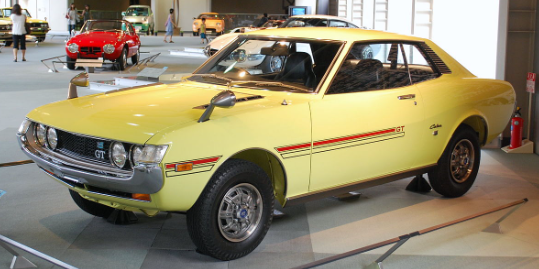

ტოიოტას ისტორია იწყება XIX საუკუნეში, როდესაც საკიჩი ტოიოდამ გამოიგონა იაპონიაში პირველი ელექტრო სართავი დაზგა, რამაც რევოლუცია მოახდინა ქვეყნის ტექსტილის წარმოებაში. 1918 წლის იანვარში საკიჩიმ შექმნა „ტოიოდა“-ს სართავი და საქსოვი კომპანია და თავისი ვაჟიშვილის დახმარებით, 1924 წელს მან განახორციელა მთელი ცხოვრების ოცნება აეშენებინა ავტომატური სართავი დაზგა. 2 წლის შემდეგ კი მან შექმნა „Toyoda Automatic Loom Works“. მამის მსგავსად, კიიჩიროც ინოვატორი იყო და 1920 წელს მისი ევროპაში და აშშ-ში ვიზიტების დროს, იგი დაინტერესდა ავტომობილების წარმოებით. £100,000, რომელიც კიიჩირომ მიიღო თავისი ავტომატური სართავი დაზგის პატენტის გაყიდვაში, მან მოახმარა ახალი კომპანიის „Toyota Motor Corporation (TMC)“ შექმნას, რომელიც დაარსდა 1937 წელს. სართავი დაზგებიდან ავტომობილებამდე, Toyota ანვითარებს წარმოების ხაზს საზღვრების გაფართოების გზით. 1997 წელს, ინოვაციური პრიუსის სახით, ტოიოტამ მსოფლიოს ჰიბრიდული ტექნოლოგია გააცნო და პირველი ჰიბრიდის წარმოებიდან დღემდე 15 მილიონი ჰიბრიდული ავტომობილი გაყიდა. დღესდღეისობით, ტოიოტა გახლავთ მსოფლიოში ერთ-ერთი უმსხვილესი ავტომობილების მწარმოებელი, მისმა გაყიდვებმა 2019¹ წელში შეადგინა 10 მილიონ მოდელზე მეტი, ხუთივე კონტინენტის მასშატაბით. „Fortune Global 500“²-ის ტოპ ათეულში, ტოიოტა იკავებს ადგილს მსოფლიოს წამყვანი კორპორაციების გვერდით და ამაყია იმით, რომ არის ავტომობილების მწარმოებელი, რომელიც აღფრთოვანებას იმსახურებს. მიღწეული წარმატება კომპანიის რწმენით მოპოვებულია მომხმარებლის მიმართ ერთგულებით.
 back